使用火山AI训练文档建立对应AI智能体应用
下面以“阿里云百炼”来演示如何使用视窗平台AI训练文档来免费建立AI智能体应用的具体步骤,其它火山子平台（安卓/服务器）及其它AI云产品（如“腾讯云智能平台”）操作方式类似。
1、首先打开阿里云百练的官网：https://bailian.console.aliyun.com
2、使用您的阿里云账号登录进去：
3、然后点击中间右侧的“应用”按钮：
4、点击下方的“去应用广场”：
5、点击左侧的“应用数据”：
6、点击右侧的“导入数据”按钮：
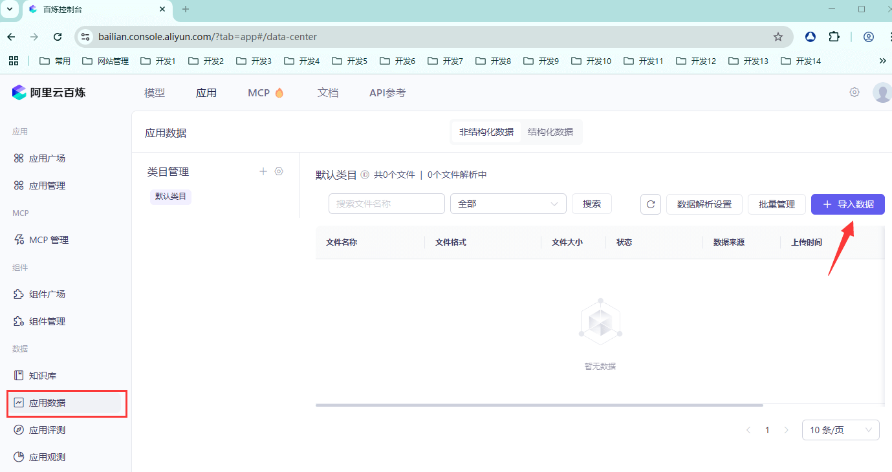
7、点击中间的“点击或拖拽上传文件”：
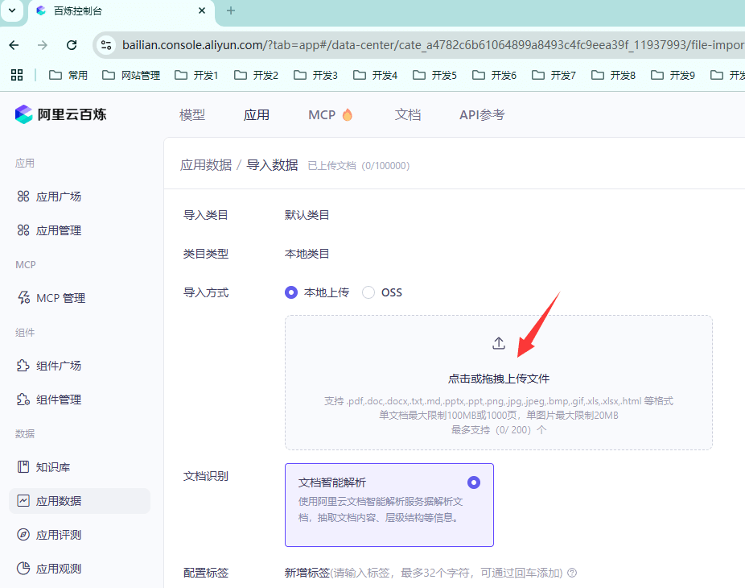
8、选择并上传火山所提供的视窗AI训练文档。
本示例使用的是多文件格式训练文档，需要先下载“视窗平台AI训练文档(多文件格式)”压缩包将其解压，然后选择上传解压出的所有文档。
也可以使用单文件格式的训练文档，下载使用“视窗平台AI训练文档(单文件格式)”即可。
如欲训练其它子平台的智能体应用，在“https://doc.voldp.com/vol_ai.htm”下载使用对应的训练文档即可，其它步骤和方法完全一致。
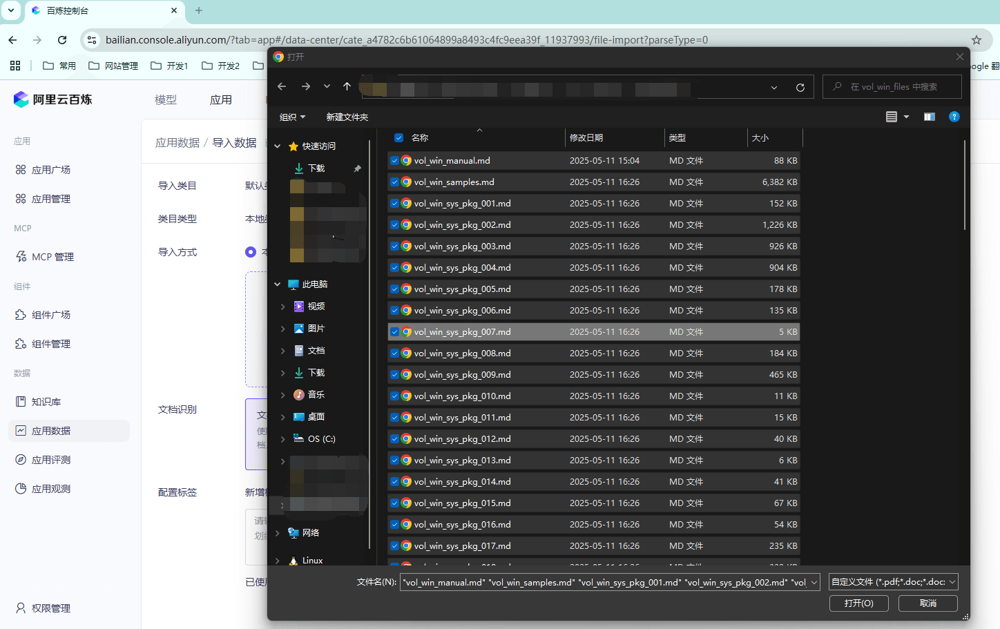
9、等待其上传完毕，然后点击左下角的“确认”按钮：
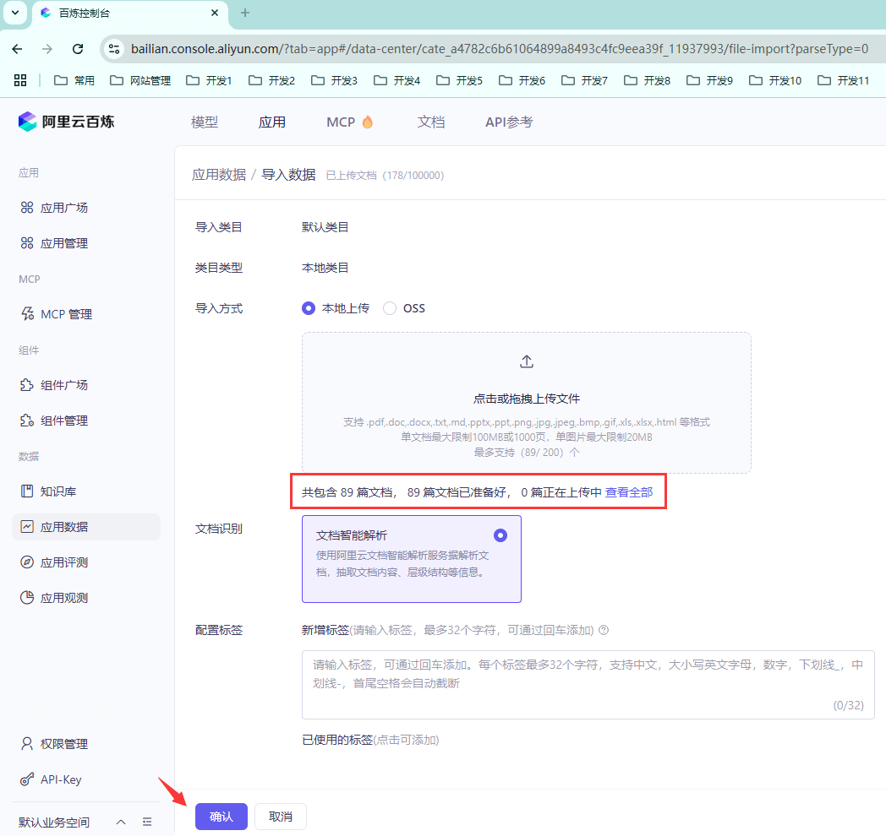
10、点击“确认”按钮后阿里云会对这些文档进行解析导入，等待所有文档的状态均变为“导入完成”状态，直到列表框顶部显示“0个文件解析中”。
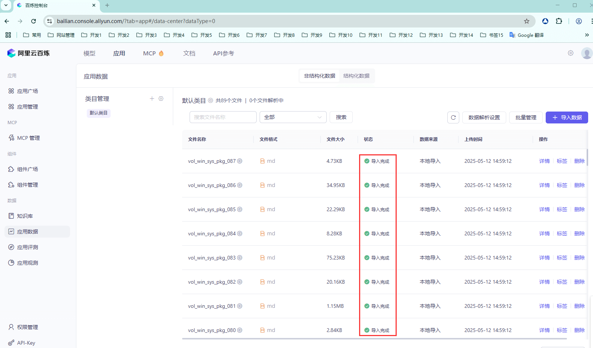
11、点击左侧的“知识库”按钮：
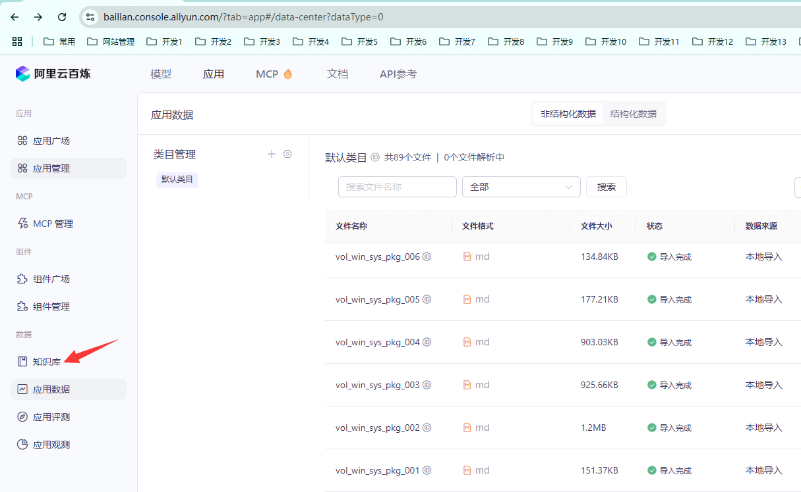
12、点击中间的“创建知识库”按钮：
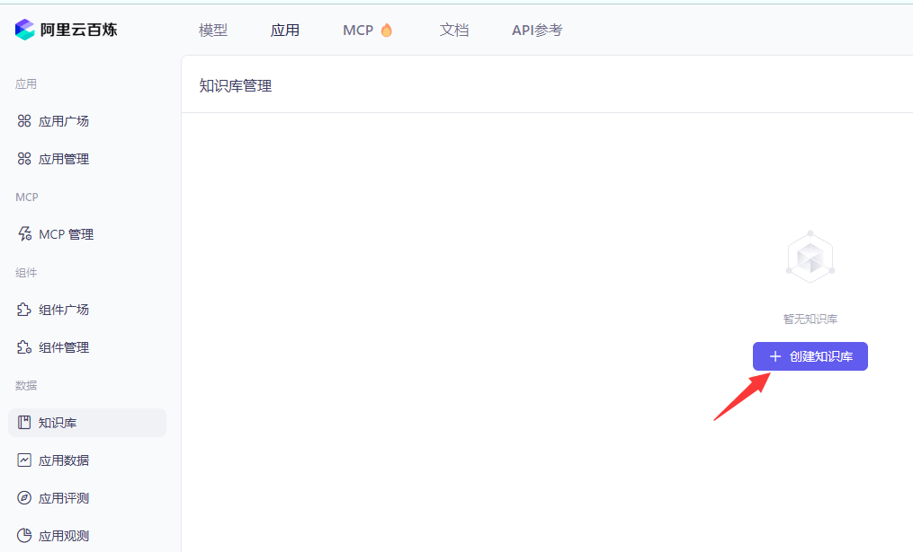
13、输入知识库名称，然后点击底部的“下一步”按钮：
14、进入数据选择界面，选择“选择类目”选项，然后选中“默认类目”，确认该类目中所有文档的状态均处于“导入完成”状态，然后点击“下一步”按钮。
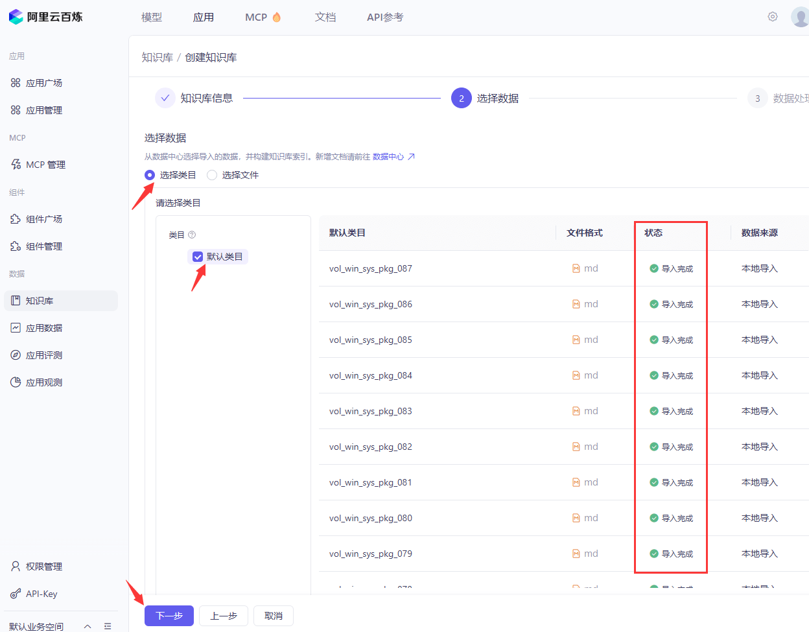
15、设置“最大分段长度”和“分段重叠长度”参数，然后点击底部的“导入完成”按钮。
注意：为了达到最好的生成效果，本示例将这两个参数值均设置到了最大值，但是这样在实际使用时比较消耗token（token的意思为“词”，是AI大模型的输入/输出基本计费单位），并且生成速度较慢，您可以自己尝试将这两个参数调整到一个比较合适的值，以既满足程序生成质量和速度又能降低成本。
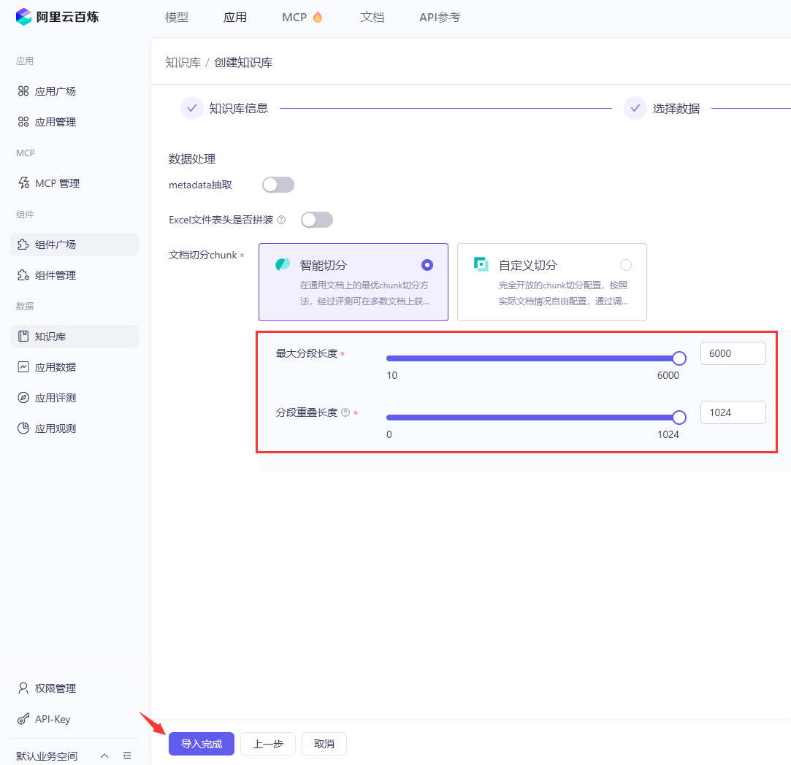
16、此时点击左侧的“知识库”按钮即可看到我们所建立的知识库：
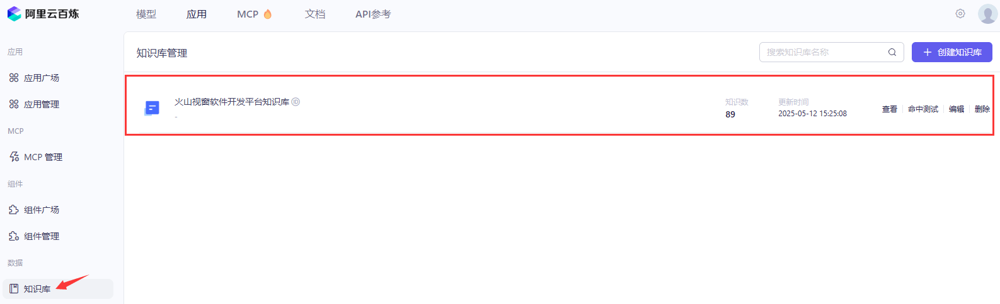
17、点击左侧的“应用管理”：
18、点击右上角的“新增应用”按钮：
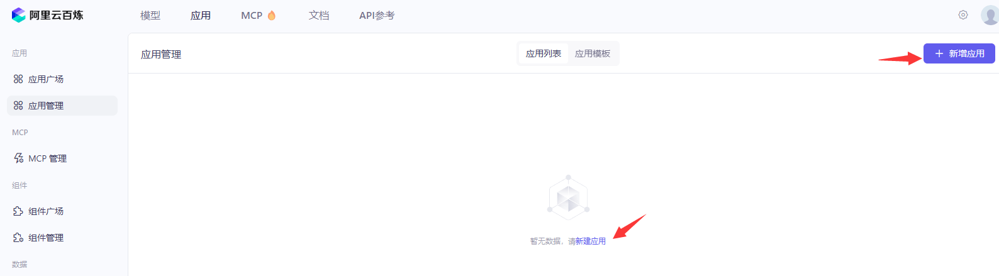
19、点击“立即创建”按钮：
20、此时进入了智能体应用的创建界面：
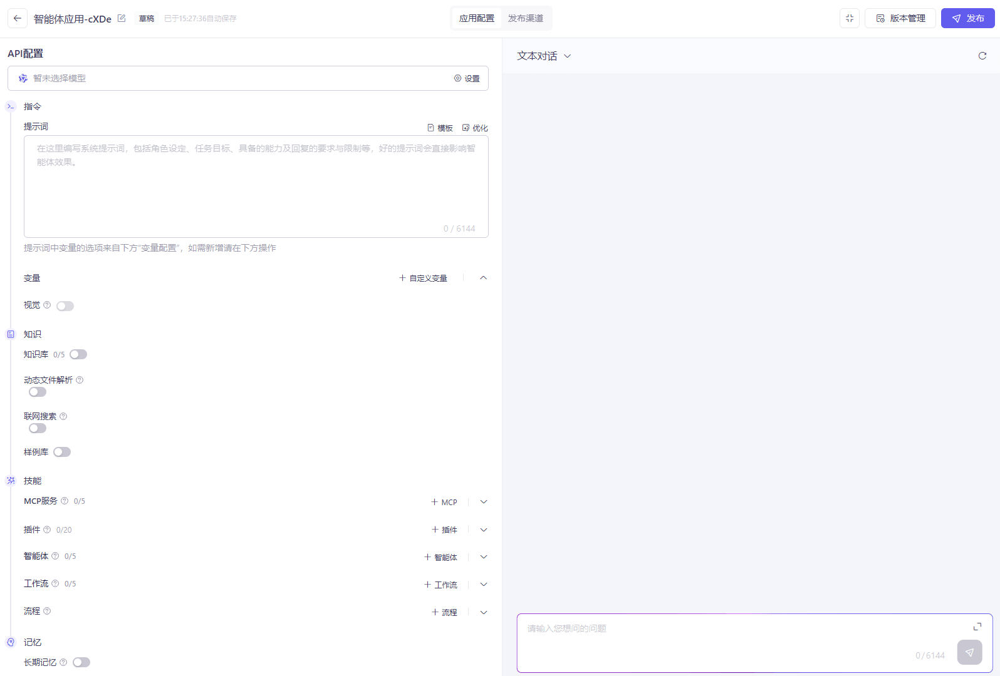
21、点击“API配置”组合框右侧的“设置”按钮进入AI大模型选择和配置界面。
注意：
将“温度系数”参数设置为“0.3”及以下可以避免AI大模型太过自由发挥，是AI用作代码生成时的较佳参数值。
为了达到最好的生成效果，这里将“最长回复长度”和“携带上下文轮数”参数均设置为了最大值，同第15步，您可以自己尝试将这两个参数调整到一个比较合适的值，以既满足程序生成质量和速度又降低成本。
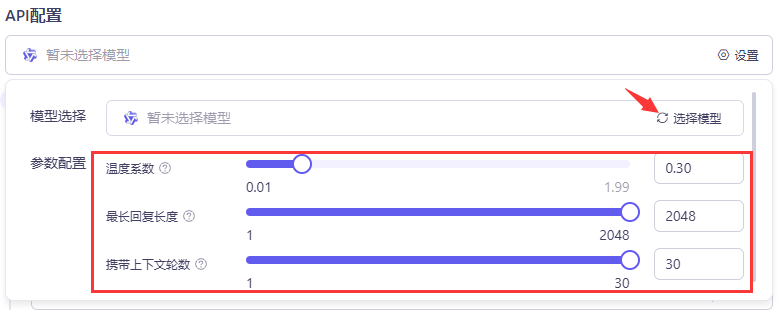
22、点击上图中的“选择模型”链接进行所使用AI大模型的选择。
我们这里选择了“DeepSeek”的“DeepSeek-R1”大模型，您也可以选择使用其它的大模型（如“通义”类别中的模型）。模型选择好后点击右下方的“确认”按钮。
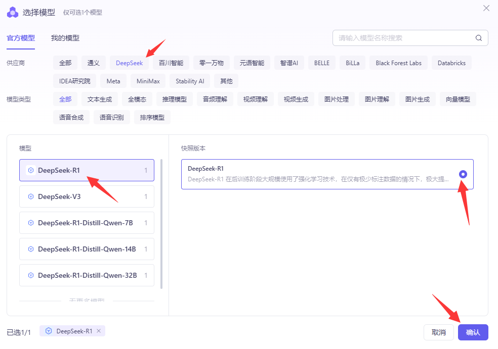
23、在弹出的对话框中点击“确认”按钮：
24、选中“知识库”单选框，然后点击其右侧的“+知识库”链接，然后将我们先前创建的“火山视窗软件开发平台知识库”添加进来：
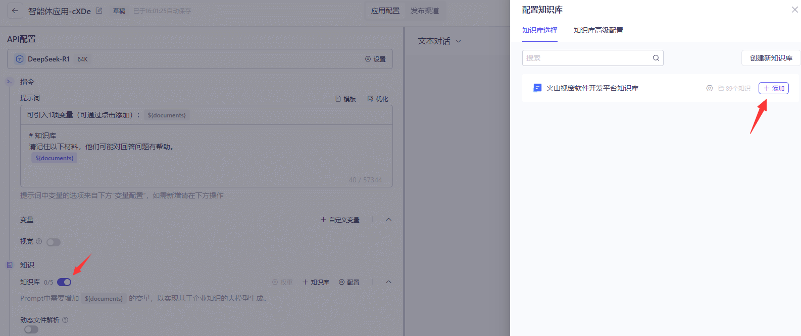
25、点击“知识库”单选框右侧的“配置”链接对知识库的使用参数进行配置。
注意：为了达到最好的生成效果，这里将“召回片段数”和“知识库拼装最大长度”参数均设置为了最大值，将“回答范围设定”选项设置为了“搜索阈值+大模型判断”。同第15和21步，您可以自己尝试将这些参数调整到一个比较合适的值，以既满足程序生成质量和速度又降低成本。
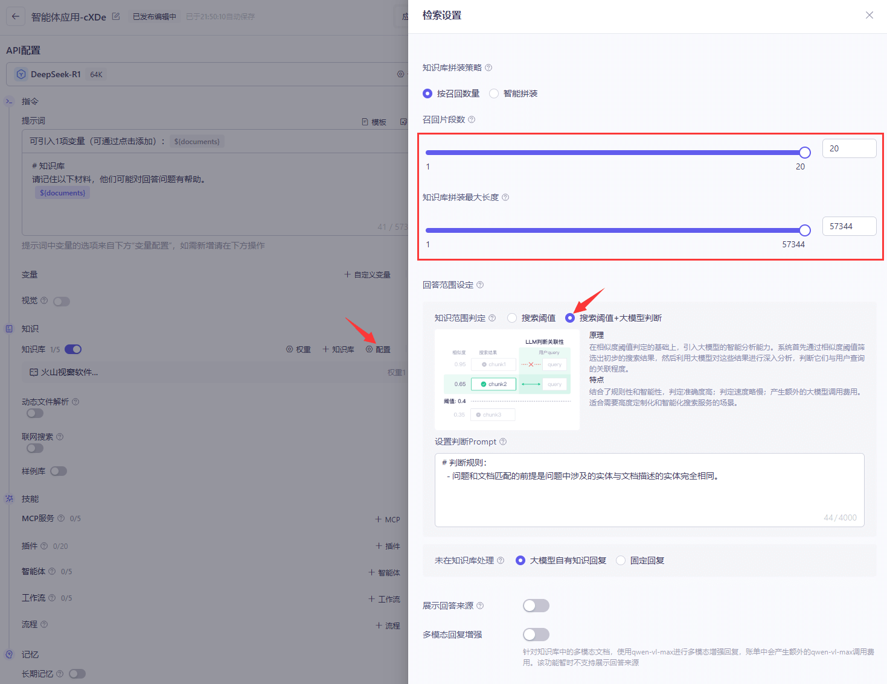
26、选中底部的“长期记忆”单选框，然后在“指令->提示词”编辑框尾部输入下面的提示词文本行（为Markdown格式）：
# 注意事项
- 所生成程序的第一行内容必须为：<火山程序 类型 = "通常" 版本 = 1 />
- 所生成程序的第二行内容必须为包定义语句行
- 仅使用语法手册中列出的关键字和系统类库手册中列出的已有成员
- 循环语句请使用以下格式而不要使用C/java的for关键字格式: 循环 (整数循环变量起始值, 变量目标值, 变量名称, 变量递增值)
注意：您也可以根据AI的实际生成效果自行在这段文本后面添加对应的提示行，每行以“- ”（半角减号字符加一个空格）文本开头，以避免一些常见频发的生成错误。所有提示词在每次回答问题时会一起提交给AI大模型，因此对每次问题回答都会生效。
27、至此，火山视窗智能体应用已经配置完成。您可以在右侧下方编辑框中对其进行提问，所生成的火山程序内容点击其右上角的“Copy code”链接即可将其复制到剪贴板，然后直接粘贴到火山IDE的程序内容里面。点击右上角的“发布”按钮可以将此智能体应用发布。
如果您对回答的内容不满意，可以将错误原因或者直接将火山编译器输出的错误信息提交过去，AI会再次重新生成。对于经常性的错误，您可以将其加入到左侧的“提示词”编辑框里面，这样每次回答问题时AI都会参考。
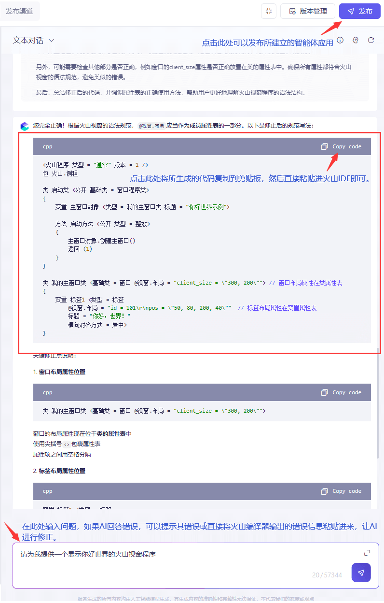
28、下面为使用该AI智能体应用生成的火山程序及其运行效果：
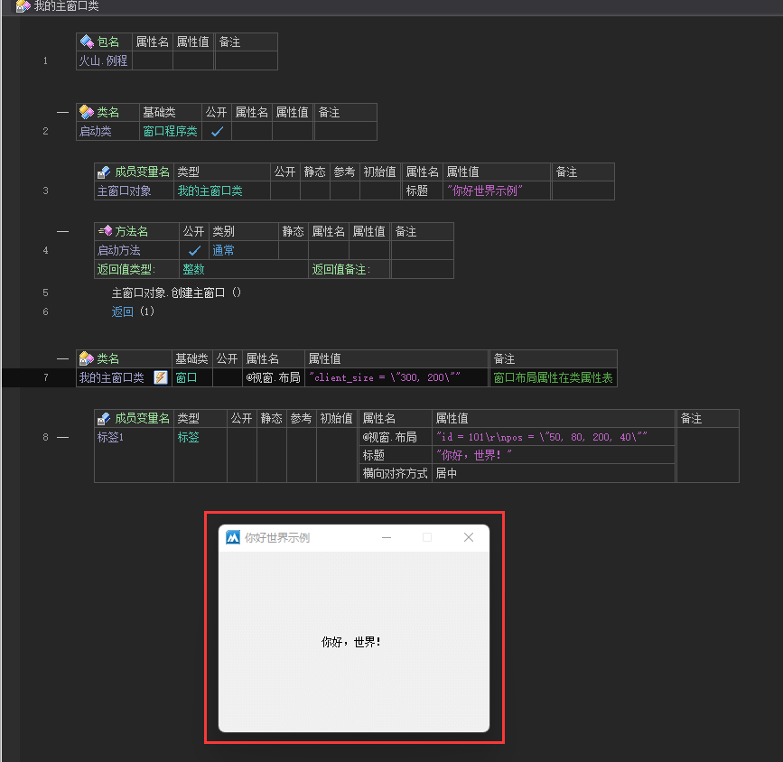
29、相关成本费用评估：
智能体应用的成本就是所使用AI大模型的输入输出token费用，目前阿里云百练里面每个大模型对所有用户均有100万token的免费额度，按照一个问题消耗大概3000到5000个token来估算，大概可以免费回答200到300个问题。免费额度用完之后，您可以选择更换一个其它的大模型继续使用新的免费额度，如果觉得当前所使用大模型效果更好，也可以选择付费使用。
就前面所选择的“DeepSeek-R1”大模型来说，其官方价格如下：
模型调用-输入：¥0.004 / 千Token
模型调用-输出：¥0.016 / 千Token
输入输出合计平均0.01元每千token，也就是说回答一个问题的费用估计为0.03到0.05元之间，如果按一个月咨询300到500个问题来算，费用估计在9到25元之间。这笔费用您提前预存到阿里云账户里面即可，会自动扣除。
注意：以上费用为估算结果，仅用作参考，具体实际费用由阿里云百练官方实时价格和您的实际使用情况决定。